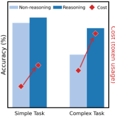
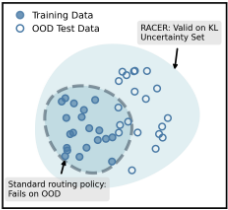
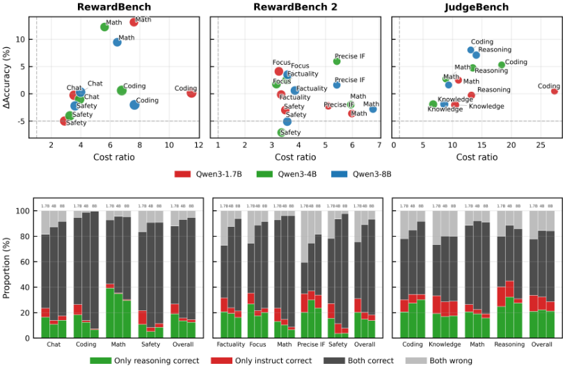
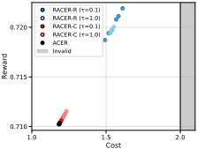
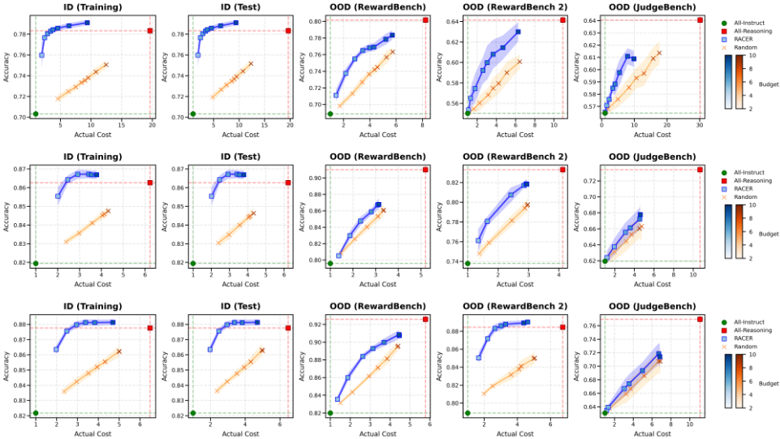
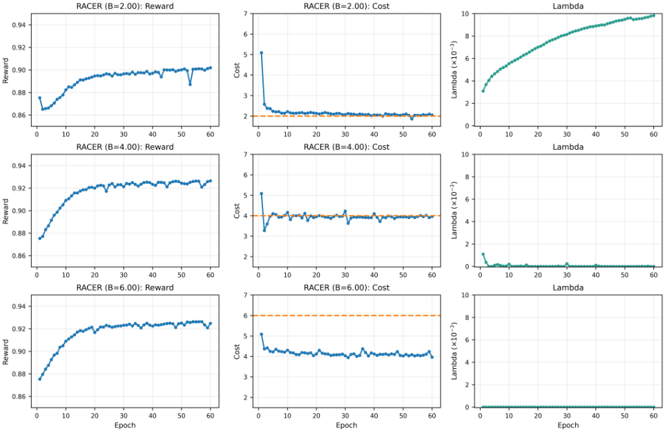
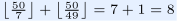

推理并非免费：面向 LLM-as-a-Judge 的鲁棒自适应成本高效路由
论文实证研究推理（reasoning）模式在 LLM-as-a-Judge 场景中的真实收益与代价：在 math、coding 等需要结构化验证的任务上，显式推理显著提升评判准确率，但在 safety、knowledge 等较简单评测上收益有限甚至为负，且 token 成本大幅上升，因此推理应被选择性启用而非普遍开启。作者提出 RACER，将'是否启用推理评判'建模为带预算约束的分布鲁棒优化问题，用 KL 散度不确定性集显式应对查询分布偏移，通过样本重加权的 primal-dual 算法求解，并给出最优策略唯一性与线性收敛的理论保证。实验显示 RACER 约以一半的 All-Reasoning 成本达到甚至超过全推理评判的准确率，并在 OOD 基准上稳定优于 RouterBench-KNN、RouteLLM-MF、M-IRT 等基线。对团队而言，它同时提供了'何时该让 judge 开推理'的实证结论与可落地的成本控制方法。
推理型 LLM 正被广泛用作自动评判器（LLM-as-a-Judge），但其在评判任务上的收益与成本并不清楚：显式推理仅在需要结构化验证的任务上有效，在简单评测上可能过度思考（overthinking）反而出错，且多步推理带来显著更高的计算成本；此外，现有模型路由方法多在静态数据上训练，忽视真实查询的分布漂移，部署后可能导致成本超预算或选错评判模式。
第一步做受控配对实验：在同一混合模型（Qwen3 1.7B/4B/8B）的 reasoning 与 non-reasoning 两种推理模式间比较评判准确率与 token 成本，并用案例分析归纳推理何时有效（需要显式验证时有益、表面线索明显时冗余、过度扩展评估范围时有害）。第二步提出 RACER：以查询与两个候选回答的文本嵌入（Qwen3-embedding-4B/bge-3）为输入、小型 MLP 为路由策略，在固定成本预算下选择推理或非推理评判；将路由学习形式化为带约束的分布鲁棒优化，在 KL 散度不确定性集上最大化最坏情况奖励并满足最坏情况成本约束，经 Theorem 3.1 得到闭式重加权分布，用熵正则化的 primal-dual 算法求解；理论上证明鞍点存在唯一（Theorem 4.1）且策略以线性速率收敛（Theorem 4.2）。
在 JUDGEBENCH、REWARDBENCH、REWARDBENCH-2 三个基准上，推理评判的准确率增益集中于 math 与 coding，safety 与 knowledge 收益有限甚至下降；推理模式 token 成本显著更高（各数据集具体成本比数值见论文 Table 1，正文未逐一列出）
预算 C=4 下对比 RouterBench-KNN、RouteLLM-MF、M-IRT：RACER 在 1.7B/4B/8B 模型上分别超过最强基线 0.64、1.10、1.06 个百分点
在训练划分与 in-distribution 测试划分上，RACER 以约一半于 All-Reasoning 的成本达到甚至超过全推理评判的准确率
消融实验：OOD 查询成本较低时 RACER-R（仅奖励鲁棒）取得最高奖励；OOD 偏移推高成本时 RACER-C（仅成本鲁棒）能持续将 OOD 成本控制在预算内，两个 RACER 变体在奖励与成本上均比非鲁棒基线 ACER 更稳健
自路由（self-routing）基线几乎将全部输入路由至推理模式，行为与成本等价于全推理评判，无法学到有效选择性
熵正则敏感性：β=0.05 一致降低准确率，β∈{0.005, 0.01} 表现稳定；去掉熵正则在紧预算下损害准确率
跨模型家族验证（DeepSeek-R1-Distill-Llama-8B + Llama-3.1-8B-Instruct 评判对）：RACER 在匹配预算下持续优于随机路由，并常以更低成本超过全推理准确率
据论文所述，这是首个在 LLM-as-a-Judge 领域系统研究路由策略的工作，也是首个为 LLM 路由策略提供理论收敛保证（最优策略唯一性、线性收敛）的工作；与已有主要面向问答任务、偏经验启发式的路由方法（级联策略、P2L、RouteLLM、M-IRT 等）不同，RACER 通过 KL 不确定性集上的分布鲁棒优化显式处理分布偏移，并对奖励与成本两项分别施加鲁棒性；同时证明无需 judge 专项训练，从解题任务学到的推理能力也能有效迁移到评判任务。
相关度级别：high
命中能力域：3.5 评测与可靠使用
理由：LLM-as-a-Judge 是团队做自动化评测（代码审查结果评估、文档/测试质量评判、知识库问答质量抽检等）的核心手段，本文直接命中 3.5 域的'评测基准与方法'与'成本与效率优化'：其配对实验给出'推理模式何时提升评判质量'的可操作实证结论（结构化验证类任务受益、简单任务过思考），其路由器只需嵌入模型加小型 MLP、无需训练大模型，符合团队'用好模型而非训练模型'的定位；分布鲁棒设计还针对线上查询分布与评测集不一致这一团队常见问题。
建议动作：深入精读并做内部分享
arXiv:2605.10805v1 [cs.AI] 2026年5月11日
推理并非免费：面向 LLM-as-a-Judge 的鲁棒自适应成本高效路由
Wenbo Zhang * 1 Lijinghua Zhang * 1 Liner Xiang * 1 Hengrui Cai
具备推理能力的大语言模型（LLM）近来已被用作自动化评判者，但其在 LLM-as-a-Judge（以大语言模型作为评判者）场景中的收益与成本仍不明确。通过对推理型与非推理型评判者进行受控比较，我们表明，显式推理能显著提升需要结构化验证的任务（如数学与编程）上的评判准确率，但在较简单的评估中收益有限甚至为负，并带来显著更高的计算成本。这些发现表明，推理应当被选择性地使用而非普遍使用，并需警惕可能出现的分布偏移。我们提出了一种鲁棒自适应成本高效路由（Robust Adaptive Cost-Efficient Routing, RACER）方法，通过将路由建模为一个受约束的分布鲁棒优化问题，在固定预算下动态地在推理型与非推理型评判者之间进行选择。RACER 通过 KL 散度不确定性集合显式地考虑分布偏移，具有高效的原始-对偶算法，并享有包括最优策略唯一性与线性收敛在内的理论保证。大量实验表明，RACER 在分布偏移下实现了更优的精度-成本权衡。
随着大语言模型（LLM）的持续发展，可靠地评估其输出质量变得越来越重要，但也愈发具有挑战性。由于人工评估成本高昂且可扩展性有限，以大语言模型作为评判者（LLM-as-a-Judge）范式已成为一种有前景的替代方案 (Zheng et al., 2023; Li et al., 2023; Liu et al., 2023; Kim et al., 2023; Fu et al., 2024)，其中 LLM 自身
1 美国加州大学欧文分校统计系。通讯作者：Hengrui Cai < hengrc1@uci.edu > 。
《第 43 届国际机器学习会议论文集》（Proceedings of the 43 rd International Conference on Machine Learning），韩国首尔。PMLR 306, 2026。版权 2026 归作者所有。

o8

被用作评估者。与此同时，具备推理能力的 LLM (OpenAI, 2024; Guo et al., 2025) 也引起了广泛关注。越来越多的工作表明，显式地训练模型在产生最终答案之前先生成长篇推理链，能够在包括数学、代码生成、指令遵循和智能体决策在内的广泛问题求解任务上显著提升性能 (Yang et al., 2025; Liu et al., 2025; Yu et al., 2025; Team et al., 2025)。尽管这些发现为了解推理在 LLM 充当问题求解者时所起的作用提供了宝贵洞见，但它们并不必然意味着此类模型是有效的评判者。在当前前沿的开源模型中，推理能力通常是通过在可验证的问题求解任务上进行训练而获得的，而评判能力并未得到显式优化 (Yang et al., 2025; Team et al., 2025; Olmo et al., 2025; Bercovich et al., 2025)。这引出了一个至关重要的问题：从问题求解任务中学到的推理技能能否被有效地迁移到评判任务中？
即使
为应对这些挑战，我们提出了鲁棒自适应成本高效路由（Robust Adaptive Cost-Efficient Routing, RACER）方法，该方法将路由器学习建模为一个分布鲁棒的受约束策略优化问题，如图 1b 所示。分布鲁棒学习框架近来已被用于在各种场景中应对分布偏移问题（Namkoong & Duchi, 2016; Rahimian & Mehrotra, 2019; Duchi et al., 2021）。这一建模方式通过在以训练数据为中心的数据分布不确定性集合上进行优化，显式地考虑了分布偏移。通过求解由此得到的鲁棒目标，RACER 寻求在分布偏移下依然可靠的策略，而非仅仅针对平均情况下的性能进行优化。
我们的贡献总结如下：
此外，图 2 中呈现的异质的准确率-成本权衡表明，奖励（reward）与计算成本都可能在不同领域和基准测试之间发生偏移。因此，仅在分布内（in-distribution）数据上调优的路由器（router），在分布偏移下可能对推理的收益或违反预算的风险做出错误估计。这促使我们在式 (4) 中采用分布鲁棒目标，该目标分别对奖励项和成本项施加鲁棒性，以对冲这两种失效模式。

To better understand when and why reasoning improves LLM-as-a-Judge, we conduct a case analysis. This analysis reveals three recurring patterns: (i) reasoning improves judgment when evaluation requires explicit verification; (ii) reasoning is largely redundant when the correct choice is apparent from surface cues; and (iii) reasoning can hurt when it over-expands the evaluation scope and introduces irrelevant considerations. Representative examples are summarized in Table C.1 in the Appendix.
In math and coding tasks, where correct evaluation often requires checking intermediate steps, validating internal consistency, or reconciling multiple criteria, reasoning-mode judges are better aligned with these requirements. In contrast, for tasks such as factual recall and concise question answering, reasoning and non-reasoning judges usually agree, leaving little room for improvement. Finally, we observe failure cases where explicit reasoning introduces irrelevant factors, leading to degraded judgments.
Taken together, these case-level patterns help explain the heterogeneous accuracy-cost trade-offs observed in Section 2.1. They provide qualitative evidence that reasoning improves judgment primarily when its inductive bias aligns with the evaluation structure of the task, reinforcing the conclusion that reasoning should be activated selectively rather than unconditionally under computing constraints.
我们用 X 表示提示空间（prompt space），用 Y 表示响应空间（response space）。令 Z = X ×Y ×Y 。我们使用 ρ ∈ ∆( Z ×{ 0 , 1 } ) 表示带有偏好标签的成对提示-响应元组上的分布，其中 ∆( · ) 为概率单纯形。对于给定的成对提示-响应元组 ( x, y 1 , y 2 )，标签 l = 1 表示 y 1 优于 y 2，记作 y 1 ≻ y 2；而 l = 0 表示 y 2 ≻ y 1 。我们将模型 a 的评判函数（judge function）定义为 Φ a : Z ↦→ { 0 , 1 }，它将 z = ( x, y 1 , y 2 ) 映射为一个二元偏好标签，指示是 y 1 ≻ y 2（ Φ a ( z ) = 1 ）还是 y 2 ≻ y 1（ Φ a ( z ) = 0 ）。此处我们为简单起见假设评判是确定性的，但该框架可以很容易地扩展到随机情形。我们将规模为 n 的数据集的经验分布记为 ρ n = 1 n ∑ n i =1 δ ( z i ,l i )，其中 ( z i , l i ) ∼ ρ 。
受推理型评判器在准确率与成本之间权衡的启发，我们提出学习一个路由器来选择性地激活推理模式。我们将路由器学习形式化为一个约束优化问题。我们定义路由器策略 π : Z → ∆(0, 1)，并将从 π(·|z) 采样得到的决策记为 a，当选择推理模式时取值为 1，选择非推理模式时取值为 0。以预算 C 表示的优化目标由下式给出：
其中 r(z, a, l) = I(Φ_a(z) = l)，I(·) 为指示函数，c(z, a) 分别表示评判是否正确以及使用所选模式的成本，Π 为所关注的策略类。我们将该方法称为自适应成本高效路由（Adaptive Cost-Efficient Routing, ACER）。其核心思想是：路由策略应在将成本控制在预算内的同时最大化评判奖励，从而实现自适应的准确率-成本权衡。
然而，ACER 并未针对分布偏移进行显式设计，而分布偏移在现实场景中十分常见。为解决这一局限，我们进一步提出鲁棒自适应成本高效路由（Robust Adaptive Cost-Efficient Routing, RACER），它不仅在成本约束下优化性能，还通过分布鲁棒学习对分布偏移保持鲁棒。
我们将该问题重新表述如下：
该优化是在与 ρ_n 距离至多为 δ 的分布不确定性集合上进行的。这里，我们采用不确定性集合 U(ρ_n, δ) = {ρ̃ : D_KL(ρ̃ ∥ ρ_n) ≤ δ}，其中 D_KL 表示 KL 散度。总体而言，RACER 旨在最坏情况成本约束下最大化最坏情况奖励，显式地纳入了对提示与响应偏移的分布鲁棒性，而这一方面在很大程度上被现有路由方法所忽视。下面我们转向求解 (2)。
我们定义最坏情况奖励 R^U_{(ρ_n,δ)}(π) 与最坏情况成本 C^U_{(ρ_n,δ)}(π) 为
因此，原始问题 (2) 可以改写为：
于是，与 (3) 相关联的拉格朗日极小极大问题由下式给出：
其中 λ 为拉格朗日乘子。尽管该形式可以通过交替梯度下降方法求解，但其在计算上颇具挑战性，原因在于我们无法直接控制数据分布 ρ̃ ∈ U(ρ_n, δ)，因为这些分布并非参数化分布。此外，训练数据仅从源分布 ρ 中采样，而没有来自不确定性集合 U(ρ, δ) 中其他分布的样本。为克服这一挑战，我们引入有理论依据且易于处理的算法来求解该问题。
下面的命题表明，KL 不确定性集合内的最坏情况概率分布可以被高效地近似。类似的思想已出现在关于分布鲁棒强化学习的先前工作中（Gadot et al., 2024; Xu et al., 2025）。
定理 3.1. 设 ρ_n ∈ ∆^n 为 {z_i, l_i}_{i=1}^n 上的经验分布，并定义 f_i := E_{a∼π(·|z_i)}[f(z_i, a)]。令
定义 ρ 和 ρ 为下式的解：
我们将定理 3.1 的证明留至附录 A.1。基于该定理，我们在 KL 不确定集 U ( ρ n , δ ) 上得到了 ρ、ρ 的闭式解。所得的分布 ρ 和 ρ 是通过对数据进行重加权而得到的。在 f 为奖励函数的最小化设定中，ρ 会降低期望奖励超过基线 s 的样本的权重，并提高奖励低于基线的样本的权重。在 f 为成本函数的最大化设定中，ρ 会提高成本高于基线的样本的权重，从而使优化聚焦于高风险区域。参数 τ 控制重加权的强度：τ 越小，对极端（最坏情况）样本的集中就越激进。
由于基线 s 和 s 通常是未知的，实践中我们使用经验均值对其进行近似，该经验均值可作为一种有效的替代，通过提供上、下
输入：迭代次数 T、温度 τ、正则化参数 β、用于生成偏好数据的分布 ρ，以及由大语言模型（LLM）给出的评判函数 (Φ 0 , Φ 1)。
界，分别对应 s 和 s。因此，式 (3) 的拉格朗日极小极大问题可以转化为：
其中，最后一个等式可由定理 3.1 推得。
我们引入一个正则化的拉格朗日函数：
其中，H ( π )+ 1 2 λ 2 作为正则化项添加到原始拉格朗日函数 L ( π, λ ) 中。这里，β 是正则化参数，而 H ( π ) := E ( z,l ) ∼ ρ [ H ( π ( · | z )] 是策略 π 的熵。这一步使我们能够控制路由策略的随机性，从而鼓励探索并促进收敛 (Cen et al., 2022; Ding et al., 2023)。
然后，我们可以使用原始-对偶方法来求解式 (5)：
基于上述推导，我们在算法 1 中提出了一种实用的 RACER 算法。
在本节中，我们首先证明该优化问题存在唯一解，然后从最后一次迭代与最优路由器策略之间的 KL 散度角度证明其线性收敛性。尽管近期的一些工作研究了 LLM 的路由策略，重点关注实际的模型选择与性能-成本权衡 (Ong et al., 2025; Liang et al., 2025; Zhang et al., 2025a)，但这些方法在本质上主要是经验性和启发式的。据我们所知，本工作是首个为 LLM 路由策略的收敛行为提供理论保证的研究。
策略优化问题可以解释为求解以下 max-min 问题的鞍点，
在确立了可行性（即约束集非空）并证明解空间有界之后，我们随后证明鞍点存在且唯一，如定理 4.1 所述。所有证明均见附录 A.2。
定理 4.1（鞍点的存在性与唯一性）。存在唯一的 ( π ∗ , λ ∗ ) ∈ Π × Λ，使得对任意 π ∈ Π 和 λ ∈ Λ，均有 L β ( π, λ ∗ ) ≤ L β ( π ∗ , λ ∗ ) ≤ L β ( π ∗ , λ )，也就是说，( π ∗ , λ ∗ ) 是 L β ( π, λ ) 的鞍点。
因此，对任意 ( π, λ ) ∈ Π × Λ，
这表明，在相差两个 β 正则化项的意义下，( π ∗ , λ ∗ ) 是原始拉格朗日函数 L ( π, λ ) 的鞍点。
定理 4.1 为原始-对偶迭代确定了一个唯一的目标。在下一小节中，我们将证明更新式 (6) 和 (7) 收敛到这一唯一的鞍点。
接下来，我们分析路由策略 π t 到最优策略 π ∗ 的末次迭代收敛性。为了量化该收敛性，我们使用 KL 散度来度量 π t 与 π ∗ 在分布 ρ 下的距离，其定义为
为了推导式 (6) 的闭式解，我们将其改写为
其中 p ρ 、 p ρ 和 p ρ 分别表示分布 ρ 、 ρ 和 ρ 的密度。
随后，我们提出假设 1、假设 2 和假设 3，以建立定理 4.2 中的收敛结果。
假设 1（策略类 Π 的凸性）。所考虑的策略类 Π 是凸的，即对于任意 π 1 , π 2 ∈ Π 以及任意 α ∈ [0 , 1]，均有 απ 1 +(1 - α ) π 2 ∈ Π 。
假设 2（c 的有界性）。存在常数 M > 0，使得对所有 z ∼ ρ 和 a ∈ { 0 , 1 }，均有 c ( z, a ) ≤ M 。
假设 3（密度比的有界性）。存在常数 K > 0，使得对所有 z ∈ Z ，均有 p ρ /p ρ ≤ K 。
假设 1 是标准假设，已在凸优化与策略优化分析中被广泛采用（例如参见 Mutti et al., 2023; Ding et al., 2023）。假设 2 保证代价 c ( z, a ) 有界且方差有界，而假设 3 则控制了重要性重加权所引起的放大效应。这些条件共同意味着对偶梯度项 ( p ρ /p ρ ) c ( z, a ) 是一致有界的。这一致界使我们能够控制策略 π t +1 对对偶变量 λ t 变化的响应程度，这是建立下述线性收敛结果的关键要素。
定理 4.2（RACER 的线性收敛性）。在假设 1、假设 2 和假设 3 下，路由策略的迭代序列满足
定理 4.2 表明，迭代序列 π t 以线性速率收敛到最优策略 π ∗，该速率取决于 M、K 和 β。详细内容与证明见附录 A.3。重要的是，在对策略类 Π 的近似质量施加额外假设的条件下，我们的收敛结果可以扩展到参数化（非凸）情形。特别地，如果每次策略更新都能以受控的误差逼近最优的熵正则化解，那么末次迭代收敛结果在附加一个近似误差项的意义下仍然成立，这与先前工作中的常见研究一致（Ding et al., 2023; Zhan et al., 2023）。
We conduct two complementary sets of experiments with a shared training and judgment generation protocol. The
| Subset | Split | # Pairs | Cost Ratio |
|---|---|---|---|
| Magpie Ultra | Train 1 | 27 , 785 | 11 . 2 |
| WildGuardMix | Train 2 | 6 , 709 | 3 . 4 |
| OffsetBias | OOD Test | 8 , 504 | 4 . 7 |
| Subset | Split | # Pairs | Cost Ratio |

0.745
0.740
0.735
0.730
2.5
Figure 3. Reward-cost trade-offs evaluated on the OOD dataset with a budget of 2. (a) shows that reward-robust RACER-R improves performance when the cost constraint is easily satisfied. (b) illustrates the importance of cost-robust RACER-C when the cost constraint can be violated under distribution shift.
first focuses on controlled ablations designed to isolate the roles of reward and cost robustness under targeted distribution shifts. The second evaluates end-to-end routing performance on real world LLM-as-a-Judge benchmarks to assess generalization under more realistic evaluation distributions.
Across both experimental settings, we use a unified data generation protocol to learn a router from the preference data. Given any preference dataset consisting of a prompt and a response pair ( x i , y i, 1 , y i, 2 ) , we prompt an LLM judge under two inference modes (instruct and reasoning) to select its preferred response. For each instance, we record (i) whether the judge's decision matches the ground-truth preference label, r i , and (ii) the number of tokens consumed under each inference mode, c i . The router takes as input a text embedding of the concatenated context z i = ( x i , y i, 1 , y i, 2 ) obtained from an embedding model.
Details of the judging prompts, decoding configurations, and the embedding model are provided in Appendix B. All training and evaluation sets in the following experiments are constructed using this protocol, differing only in the underlying dataset.
如我们的鲁棒目标函数 (3) 所示，所提出的公式包含两个层面的鲁棒性：作用于奖励的鲁棒性，记为 R U ( ρ n ,δ ) ( π ) ；以及作用于成本的鲁棒性，记为 C U ( ρ n ,δ ) ( π ) 。为了更好地理解每个组件的贡献，我们开展了

一项消融实验，以研究 (i) 何时需要奖励鲁棒性以及 (ii) 何时需要成本鲁棒性。具体而言，我们引入两个变体 RACER-R 和 RACER-C，它们分别仅对奖励和仅对成本应用分布鲁棒重加权。我们还将采用 (1) 中非鲁棒目标的 ACER 作为基线。
我们考虑两种代表性场景：(a) 分布外（OOD）查询比分布内查询需要更少的计算；(b) OOD 查询比分布内查询需要更多的计算。我们的数据集构建自 SKYWORK REWARD PREFERENCE DATASET (Liu et al., 2024a)，其中场景 (a) 和 (b) 分别使用 Magpie-Ultra 和 WildGuardMix 进行训练，并使用 OffsetBias 作为 OOD 测试集。判断由混合推理模型 Qwen3-4B (Yang et al., 2025) 产生。奖励定义为正确性，成本定义为推理判断与非推理判断之间的相对 token 使用量（表 1）。我们使用 bge-3 (Chen et al., 2024a) 获取查询和响应的嵌入，并使用线性路由器。
如图 3 左侧面板所示，OOD 偏移有利于成本较低的查询，所有方法在各次运行中均满足预算约束。RACER-R 始终取得最高的奖励，且更强的鲁棒性（更低的温度）带来进一步的增益，这表明当 OOD 成本较低时，强调奖励鲁棒性能够实现更有效的预算利用。相比之下，在右侧面板中，RACER-C 取得的奖励低于 RACER-R 和 ACER，但始终将 OOD 成本保持在预算之内，这表明当分布内成本较低而 OOD 偏移会增加违反风险时，成本鲁棒性提供了一种更安全的策略。总体而言，与非鲁棒基线 ACER 相比，RACER 变体在奖励和成本两方面均表现出更强的鲁棒性。
训练数据。遵循数据生成协议，我们从以下两部分构建训练集：(i) 来自 SKYWORK-REWARD（Liu et al., 2024a）的 20,000 个实例，以及 (ii) 从 MATH-STEP-DPO10K（Lai et al., 2024）和 CODE-PREFERENCE-PAIRS（Vezora, 2024）中采样的另外 20,000 个实例。我们纳入数学与代码数据是为了提升对推理密集型领域的覆盖，这些领域在 SKYWORK-REWARD 中代表性不足。我们通过将 Qwen3-1.7B/4B/8B（Yang et al., 2025）的推理变体与非推理变体配对来生成评判。我们还将 Llama-3.1-8B（Grattafiori et al., 2024）作为额外的模型家族纳入其中；相应结果报告于附录 C.3，呈现出类似的趋势，表明 RACER 能够跨模型家族泛化。
评估数据集。我们在涵盖多种任务领域的标准 LLM-as-a-Judge 基准测试（benchmark）上评估所学到的路由策略，包括 REWARDBENCH（Lambert et al., 2025）、REWARDBENCH-2（Malik et al., 2025）和 JUDGEBENCH（Tan et al., 2024a）。所有评估基准测试均从训练中留出，专门用于分布外评估。评判使用相同的模型对生成。
基线。我们与三个基线进行比较：
我们在计算预算 C ∈ {2, 2.5, 3, 3.5, 4, 5, 7, 10} 下评估路由策略。对于每个预算，我们将训练与评估重复 20 次，并报告准确率和实际成本比率的均值与标准差。我们的路由策略由一个四层神经网络参数化。详细的实现与超参数选择参见附录 B.3 和 B.5。
图 4 报告了三种模型规模在不同预算下的准确率-成本权衡。在训练集划分和分布内测试集划分上，RACER 都达到了一个显著有利的区间：在约为 All-Reasoning 成本一半的情况下，其准确率与 All-Reasoning 评判器相当甚至常常更高，这表明推理可以集中于能带来最大边际收益的实例子集。在 OOD 基准测试上，RACER 仍然持续取得优于基线的一致改进，表明所学到的选择规则能够泛化到训练分布之外。Random 基线在 All-Instruct 与 All-Reasoning 两个端点之间形成近似线性的插值，对应于以固定比例不加区分地激活推理。相比之下，RACER 勾勒出一条呈凹形且准确率更高的前沿；RACER 曲线与 Random 曲线之间的面积反映了策略性实例级选择所带来的额外增益，这种增益无法通过仅仅提高整体推理比例来解释，而是源于在相同预算下将推理分配给合适的样本。
| Method. | 1.7B.Acc. | 1.7B.Cost | 4B.Acc. | 4B.Cost | 8B.Acc. | 8B.Cost |
|---|---|---|---|---|---|---|
| RouterBench-KNN | 71 . 3 | 2 . 6 | 84 . 1 | 2 . 5 | 86 . 8 | 2 . 6 |
| RouteLLM-MF | 69 . 4 | 3 . 8 | 84 . 7 | 3 . 4 | 88 . 2 | 4 . 1 |
| M-IRT | 71 . 6 | 3 . 4 | 84 . 3 | 2 . 7 | 88 . 9 | 3 . 4 |
| RACER | 72 . 2 | 3 . 6 | 85 . 8 | 3 . 4 | 90 . 0 | 3 . 9 |
| Method. | 1.7B.Acc. | 1.7B.Cost | 4B.Acc. | 4B.Cost | 8B.Acc. | 8B.Cost |
与其他先进基线的比较。我们还在相同的预算约束（C = 4）下，将 RACER 与三个具有代表性的先进基线进行了比较：RouterBench-KNN (Hu et al., 2024)、RouteLLM-MF (Ong et al., 2024) 以及 M-IRT (Song et al., 2025)。结果在 3 个测试数据集上并经 10 次重复实验取平均。如表 2 所示，RACER 在全部三个模型家族中均取得了最高的准确率，同时保持在预算范围之内。对于 1.7B、4B 和 8B 模型，RACER 相比最强基线分别提升了 0.64、1.10 和 1.06 个百分点。这些结果表明，RACER 通过将推理分配给最能从中获益的实例，更有效地利用了可用预算，从而获得了比先前路由方法更强的奖励-成本权衡。由于 RACER 是一个通用框架，原则上它可以与更先进的路由架构相结合，以进一步提升性能。
| β. | C = 2.Acc. | C = 2.Cost | C = 3.Acc. | C = 3.Cost | C = 4.Acc. | C = 4.Cost |
|---|---|---|---|---|---|---|
| 0 | 85 . 2 | 1 . 9 | 86 . 7 | 2 . 9 | 86 . 8 | 3 . 7 |
| 0 . 005 | 85 . 5 | 2 . 0 | 86 . 7 | 2 . 9 | 86 . 7 | 3 . 6 |
| 0 . 01 | 85 . 5 | 2 . 0 | 86 . 7 | 2 . 9 | 86 . 7 | 3 . 8 |
| 0 . 05 | 84 . 8 | 2 . 0 | 86 . 0 | 2 . 9 | 86 . 2 | 3 . 8 |
| β. | C = 2.Acc. | C = 2.Cost | C = 3.Acc. | C = 3.Cost | C = 4.Acc. | C = 4.Cost |
熵正则化项的消融与敏感性分析。我们使用 Qwen3-4B 评判模型对（judge pair），在 3 个代表性预算水平上对 β（熵正则化的权重）进行了消融与敏感性分析。如表 3 所示，移除熵正则化项会在预算紧张时损害准确率，这证实了当约束真正起作用时它所作的贡献。当 β ∈ {0.005, 0.01} 时性能保持稳定，而 β = 0.05 则始终降低准确率，这支持了我们对 β 的默认选择。
LLM-as-a-Judge 与推理。人工评估被视为评估大语言模型（LLM）生成内容的黄金标准指标（Ouyang et al., 2022; Zheng et al., 2023）。然而，人工评估成本高昂且耗时，难以在实践中规模化。为解决这一问题，LLM-as-a-Judge（以大语言模型作为评判）被提出作为一种自动化的替代方案（Zheng et al., 2023; Li et al., 2023; Liu et al., 2023; Kim et al., 2023; Fu et al., 2024）。其优势之一在于 LLM 能够为其最终评判提供解释，从而便于错误分析。为评估 LLM-as-a-Judge 的真实表现，研究者引入了多个基准测试（benchmark）来衡量其在不同领域上的评判准确率（Tan et al., 2024b; Liu et al., 2024b; Lambert et al., 2025）。近期已有若干研究表明，通过在评判专用任务上进行强化学习，将推理（reasoning）能力融入模型，可以进一步提升评估性能（Whitehouse et al., 2025; Saha et al., 2025; Chen et al., 2025a;b）。值得注意的是，我们的工作表明，即使不进行评判专用训练，从通用领域训练中获得的推理能力仍然可以有效迁移。
LLM 路由。随着 LLM 参数量的持续增长，其推理成本也大幅上升。为解决这一问题，LLM 路由（LLM routing）作为一种有效策略应运而生，它在平衡性能与成本的同时，将用户查询分配给合适的 LLM。Chen et al. (2023) 采用了级联策略，依次查询多个 LLM，直到产生令人满意的响应为止。P2L（Frick et al., 2025）采用提示到回归（prompt-to-regression）的方法来预测 Bradley-Terry 系数向量，进而用于选择最优模型。Aggarwal et al. (2023) 和 Ong et al. (2025) 训练了一个二分类预测器，在强模型与弱模型之间进行切换。该方法虽然有效，但需要同时部署多个 LLM。近期研究（Liang et al., 2025; Zhang et al., 2025a）则研究了单一混合推理模型内部的模式切换，这与我们的设定最为接近。然而，我们提出了一个具有原则性的策略学习框架，不仅能在预算约束下最大化性能，还显式地应对了分布偏移（distribution shift）问题——这是现有路由系统中一个重要却在很大程度上被忽视的挑战。此外，以往研究主要聚焦于问答任务，而我们则首次对 LLM-as-a-Judge 领域中的路由策略进行了全面研究。
分布鲁棒学习。分布鲁棒优化（Distributionally Robust Optimization, DRO）已在机器学习（Shafieezadeh Abadeh et al., 2015; Deng et al., 2020）、统计学（Belloni et al., 2011; Duchi & Namkoong, 2021）和运筹学（Goh & Sim, 2010; Kuhn et al., 2019）领域得到广泛研究。它通常被表述为一个极小极大（minimax）问题：对抗者在规定的不确定性集合内扰动数据生成分布以最大化期望损失，而学习者则优化模型参数以最小化这一最坏情况风险。在不确定性集合的多种构造方式中，f-散度球（f-divergence balls）是一种常用的选择（Hu & Hong, 2013; Namkoong & Duchi, 2016; Levy et al., 2020; Duchi & Namkoong, 2021），原因在于它们与经典散度度量之间存在紧密联系，并且其经过充分研究的统计性质便于在 DRO 框架中进行分析与实现。
在本工作中，我们研究了 LLM（大语言模型）从问题求解任务中获得的推理能力能否迁移到评判任务中。我们发现，基于推理的评判者能够显著提升精度，但这种提升依赖于具体任务，并且往往带来显著更高的计算成本，尤其是在分布偏移的情况下。为解决这些问题，我们提出了 RACER，它在固定预算下自适应地激活推理型评判者。我们还首次提供了具有线性收敛保证的理论分析，同时支撑了效率与鲁棒性。在实验上，RACER 在多个分布外（out-of-distribution）基准测试上持续优于基线方法，取得了更优的精度-成本权衡。
RACER 聚焦于采用基于 KL 散度的不确定性集合的二元路由；尽管其在中等程度的分布偏移下表现有效，但过大的不确定性可能引发保守的路由行为，即优先保障成本安全而未能充分利用推理能力。将 RACER 扩展到更丰富的路由方案以及替代性的不确定性集合，以更好地平衡鲁棒性与自适应性，是未来工作的重要方向。
本文考察了具备推理能力的 LLM 在 LLM-as-a-Judge 场景中的收益与成本，并提出了一种鲁棒的路由框架，在预算与分布偏移约束下选择性地分配推理。其一项关键的积极影响是，通过表明推理并非普遍有益、而应有选择地加以应用，促进了计算资源更高效、更可持续的使用，同时还提升了自动化评估在真实、非平稳数据分布下的鲁棒性与可靠性。这些进展能够支持更值得信赖的基准测试与模型开发实践。潜在风险包括：对自动评判者的依赖增加，这可能传播底层模型所继承的偏见或系统性错误；以及自适应路由可能被滥用于不均衡地施加更强评估的可能性。我们通过显式分析失败案例、将鲁棒性置于最大性能之上、并将该方法定位为人工评估的补充而非替代，来缓解这些担忧。
附录提供了额外的理论分析、实验细节以及补充实验结果。在第 A 节中，我们建立了鞍点的存在性与唯一性，并证明了末次迭代收敛性（last-iterate convergence），为所提出的算法 RACER 的收敛性与最优性提供了理论保证。在第 B 节中，我们详细描述了数据生成过程、训练流程以及评估协议。在第 C 节中，我们报告了补充结果，包括训练曲线以及进一步说明我们提出该算法动机的代表性案例研究。
引理 A.1. 设 ρ n ∈ ∆ n 为 { z i } n i =1 上的经验分布，并定义 f i := E a ∼ π ( ·| z i ) [ f ( z i , a )] 。令
定义 ρ 与 ρ 为下述问题的解
其中 s ≤ ∑ n i =1 ρ n ( i ) ¯ f i 且 s ≥ ∑ n i =1 ρ n ( i ) ¯ f i 。
证明. 我们针对 ρ 证明该结论；对 ρ 的证明是类似的。
考虑如下凸优化问题
目标函数是线性的，且 KL 约束是凸的。此外，Slater 条件成立（例如，当 δ > 0 时，˜ ρ = ρ n 是严格可行的）。因此，Karush-Kuhn-Tucker（KKT）条件是最优性的充分必要条件。
为 KL 约束引入拉格朗日乘子 λ ≥ 0，为归一化约束引入 µ ∈ R，为非负性约束引入 ν i ≥ 0，则 (A.1) 的拉格朗日函数为
KKT 的平稳性条件意味着，对所有 i，
13
对 (A.3) 求解 ˜ ρ ( i ) 可得
这确立了 ρ 的上述形式。
剩下还需证明 s ≤ ∑ i ρ n ( i ) f i 。利用归一化条件 ∑ i ˜ ρ ( i ) = 1 以及式 (A.6)，我们得到
对凸函数 exp( · ) 应用 Jensen 不等式可得
结合 (A.7) 与 (A.8) 可得
这意味着 s ≤ ∑ n i =1 ρ n ( i ) f i 。
对 ρ 的证明完全相同：将同样的论证应用于 max ˜ ρ ∈U ( ρ n ,δ ) ∑ i ˜ ρ ( i ) f i （等价地，最小化 - ∑ i ˜ ρ ( i ) f i ），即可得到 ρ ( i ) ∝ ρ n ( i ) exp(( f i - s ) /τ ) 以及 s ≥ ∑ i ρ n ( i ) f i 。
我们首先给出命题 A.2，它陈述了 Slater 条件（可行性），该条件在约束优化的对偶分析中通常是必需的（参见例如 Ding et al., 2022; 2023）。
命题 A.2（可行性）。存在常数 ξ > 0 和策略 π 0 ∈ Π，使得 E ( z,l ) ∼ ρ,a ∼ π 0 ( ·| z ) [ c ( z, a )] - C ≤ - ξ ，其中对所有 z ∈ Z 有 π 0 (0 | z ) = 1 且 π 0 (1 | z ) = 0 。
命题 A.2 易于验证。由于 E ( z,l ) ∼ ρ,a ∼ π 0 ( ·| z ) [ c ( z, a )] = 1 ，故当 ξ ≤ C - 1 且 C > 1 时不等式成立。为了分析 L β ( π, λ ) 的鞍点，我们定义 π ∗ 为 (8) 的最优解，即，
并令 λ ∗ 表示相应的最优对偶变量，
其中 Λ ∗ 表示所有最优对偶变量构成的集合。我们记 L λ β := max π ∈ Π L β ( π, λ ) 。随后我们可以证明 Λ ∗ 是有界的，如引理 A.3 所确立的那样。
在非退化情形下（例如 δ > 0 且 { f i } 并非全部相等），KL 约束在最优点处起作用，因此 λ > 0 。由于 ρ n ( i ) > 0 且指数项严格为正，式 (A.4) 意味着对所有 i 有 ˜ ρ ( i ) > 0 。因此，由互补松弛性可知对所有 i 有 ν i = 0 ，且式 (A.4) 可简化为
令 τ := λ 并定义 s := - ( µ + λ ) 。则式 (A.5) 可以写为
14
引理 A.3（λ ∗ 的有界性）。最优对偶变量 λ ∗ 满足
因此 Λ ∗ 是有界的。
证明。令 Λ a := { λ ≥ 0 | L λ β ≤ a } 为对偶目标在 a ∈ R 下的一个下水平集。回顾 L λ β = max π ∈ Π L β ( π, λ )。对任意 λ ∈ Λ a ，我们有
其中最后一个不等式来自命题 A.2。由于 H ( π 0 ( · | z )) = 0 且
于是我们得到 λ ≤ L λ β - P ρ ( ϕ 0 ( z )= l ) ξ 。最后，取 a = L λ ∗ β 且 Λ a = Λ ∗ ，我们推导出
基于引理 A.3，我们将 λ 的定义域定义为
这确保了 Λ ∗ ⊆ Λ 。在此设定下，应用 Sion 极小极大定理（Sion, 1958）所需的全部条件均得到满足，从而保证了正则化鞍点的存在性与唯一性。
证明。基于假设 1，Π 是一个凸集。此外，由于 Λ 是凸且有界的，即紧致的，Sion 极小极大定理（Sion, 1958）保证了 L β ( π, λ ) 在 Π × Λ 中鞍点的存在性。接下来我们证明该鞍点的唯一性。回顾
由于 ∂ 2 L β ( π,λ ) ∂λ 2 = β > 0 ，L β ( π, λ ) 关于 λ 是严格凸的。接下来我们将证明 L β ( π, λ ) 关于 π 是严格凹的。我们首先考察期望项：
由此可得 以及
因此，E ( z,l ) ∼ ρ,a ∼ π ( ·| z ) [ r ( z, a, l )] 与 E ( z,l ) ∼ ρ,a ∼ π ( ·| z ) c ( z, a ) 均关于 π 是线性的。由于熵项 H ( π ( · | z )) 关于 π 是强凹的，其期望 E ( z,l ) ∼ ρ [ H ( π ( · | z ))] 也保持关于 π 强凹。因此，对于任意固定的 λ ，L β ( π, λ ) 也关于 π 强凹。
现在我们已经证明 L β ( π, λ ) 关于 π 严格凹且关于 λ 严格凸，这意味着鞍点 ( π ∗ , λ ∗ ) 是唯一的。
引理 A.3 所保证的鞍点的存在性进一步意味着，对于任意 ( π, λ ) ∈ Π × Λ ，
第一个不等式表明，对于任意 π ∈ Π ，
而第二个不等式意味着，对于任意 λ ∈ Λ ，
结合上述两个不等式可知，( π ∗ , λ ∗ ) 是原始拉格朗日函数 L ( π, λ ) 的鞍点，仅相差两个 β 正则化项。
证明。在实践中，我们将按以下步骤更新 ( π t , λ t )。
其中 η 表示步长。
为记号简便起见，我们对任意 z ∈ Z 记 w 1 ( z ) = p ρ ( z ) /p ρ ( z ) 与 w 2 ( z ) = p ρ ( z ) /p ρ ( z ) ，它们在假设 3 下均是良定义的。
根据 (6)，我们优化以下目标
16
类似于 DPO（Rafailov et al., 2023）证明中所用的论证，(A.11) 可以改写为
其中我们有配分函数：
注意，配分函数仅依赖于 z、λ t，而与策略 π 无关。现在我们定义
这构成了一个有效的概率分布。将此定义代入 (A.13)，我们可以将目标改写为
-
由于 Q ( z, λ t ) 不依赖于 π，最小值由最小化 KL 项的策略取得。根据 Gibbs 不等式，KL 散度当且仅当两个分布相同时才取得其最小值零。因此，更新后的策略由下式给出
步骤 2. 接下来我们建立 λ t 的收敛性。
我们将 π t +1 视为 λ t 的函数，并记为 ˜ π λ t := π t +1。为记号方便起见，我们记 d ( λ ) := L λ β = max π ∈ Π L β ( π, λ ) = L β ( ˜ π λ , λ )。那么 d ( λ ) 可以显式地写为，
因此，(7) 中的更新规则可以表示为 λ t +1 = [ λ t - η d ′ ( λ t )] + 。接着我们计算 d ( λ ) 的一阶和二阶导数。注意到
17
因此只需计算 ( E ( z,l ) ∼ ρ [log( Q ( z, λ ))] ) ′。我们有
从而，
基于假设 2 和 3，我们有 | - λ β w 2 ( z ) c ( z, a ) | ≤ MK β ，因此
这保证了导数的有界性。于是，微分与期望的顺序可以交换。因此，(A.15) 变为
对于二阶导数，我们有
令 s λ ( a ) = exp ( 1 β w 1 ( z ) r ( z, a, l ) - λ β w 2 ( z ) c ( z, a ) )，则 ˜ π λ ( a | z ) = s λ ( a ) / (( s λ (0) + s λ (1))。根据链式法则，我们有
我们可以推导出
以及
结合 (A.19) 和 (A.20)，(A.18) 变为
类似地，由于根据假设 2 和 3，(A.21) 是有界的，我们可以交换微分与期望的顺序。结合 (A.17) 和 (A.21)，(A.16) 变为
18
同样，由于假设 2 和 3，我们有 c ( z, a ) ≤ M 和 w 2 ( z ) ≤ K。因此，
由此我们得出结论：d ( λ ) 是参数为 β 的强凸函数，且其梯度以常数 β + M 2 K 2 β 满足 Lipschitz 连续。然后，根据 (Nesterov, 2013) 中的定理 2.1.5，在 (7) 中选取步长为 η = 2 / ( β + β + M 2 K 2 /β ) = 2 β/ ( M 2 K 2 +2 β 2 )，我们有
在我们的设定中，尽管更新涉及向可行集的投影，但投影算子是非扩张的。因此，投影梯度下降的标准结果适用，投影更新可以达到与相应的无约束梯度下降相同的收敛速率。
步骤 3. 最后，我们利用 KL 散度证明 π t 收敛于 π ∗。
给定 z，量 KL( π t ( ·| z ) ∥ π ∗ ( ·| z )) 是指数族相应自然参数之间的 Bregman 散度：
其中凸势函数 ψ 是对数配分函数
此处我们令 θ t = - λ t /β 与 θ ∗ = - λ ∗ /β ，并将 ˜ π λ ( ·| z ) 视为以 θ 为自然参数的指数族分布。
于是我们有
根据 (A.22)，我们进一步得到，
对 ψ 应用泰勒展开，可得
其中 ˜ θ 位于 θ t 与 θ ∗ 之间。因此，我们得到
这等价于
对 ( z, l ) ∼ ρ 取平均，我们得到
结合 (A.23)，我们最终推导出
19
我们使用统一的生成协议构建所有裁判数据，并明确将用于训练和分布内（in-distribution）分析的数据集与保留用于分布外（out-of-distribution, OOD）评估的数据集区分开来。
裁判生成协议。在所有数据集上，我们均使用 QWEN3 系列（1.7B/4B/8B）中相同的基座模型，在两种推理模式下生成裁判响应：非推理（non-reasoning）与推理（reasoning）。所有生成均使用完全相同的提示格式（表 C.3）和固定的 0.6 采样温度。这确保了所观察到的任何性能或成本差异都仅可归因于推理模式和数据分布。
训练与分布内数据。我们从三个来源构建训练语料库：SKYWORK-REWARD（Liu et al., 2024a）、MATH-STEP-DPO-10K（Lai et al., 2024）和 CODE-PREFERENCE-PAIRS（Vezora, 2024）。具体而言，我们从 SKYWORK-REWARD 中采样 20,000 个实例，并从 MATH-STEP-DPO-10K 与 CODE-PREFERENCE-PAIRS 的混合数据中额外采样 20,000 个实例。这些数据集共同涵盖通用指令遵循、数学推理以及与代码相关的偏好判断。
对于每个实例，我们在两种推理模式下生成成对的裁判输出。我们为每种模式记录两个信号：(i) 二值正确性指示器，通过将裁判的偏好与数据集提供的参考标签进行比较获得；(ii) 生成过程中消耗的 token 数量。这些成对的正确性与 token 成本测量定义了经验性的准确率-成本权衡，既用于第 2 节的分析，也用于训练路由策略。所有训练与分布内数据均专门用于学习路由策略。
分布外评估数据。为评估泛化能力，我们在多个与训练数据不相交的留出基准测试（benchmark）上评估路由性能，包括 JUDGEBENCH（Tan et al., 2024a）、REWARDBENCH（Lambert et al., 2025）和 REWARDBENCH-2（Malik et al., 2025）。这些基准测试涵盖多样的评估领域，并相对于训练语料库表现出分布偏移。我们在表 B.1 中简要总结了它们所涵盖的领域及分布情况。
对于所有 OOD 基准测试，我们采用与训练数据相同的裁判生成协议，包括相同的基座模型、推理模式、提示和采样温度。评估数据集仅用于 OOD 测试，不影响模型选择或超参数调优。
每个输入实例均由通过 Qwen3-embedding-4B（Zhang et al., 2025b）提取的固定维度文本嵌入来表示。具体而言，我们分别对提示和两个候选回答进行编码，并将它们的嵌入拼接起来，构成策略输入向量。相同的表示流程在所有训练与评估数据集上均保持一致地应用。
我们的路由策略是一个 4 层的多层感知机（MLP），采用 ReLU 激活函数，隐藏层宽度为 { 256 , 128 , 64 }，将输入嵌入映射为单个标量 logit。
模型使用 AdamW 优化器训练 60 个 epoch，学习率为 10 - 4，批大小为 64。与预算约束相关联的对偶变量以 10 - 3 的步长进行更新，并在每次更新后被投影到非负实数上。我们施加了系数为 0 . 005 的熵正则化项，以鼓励探索并稳定训练。
在模型选择方面，我们在留出的验证集上评估各个检查点。在满足目标预算约束的检查点中，我们选择验证准确率最高的那个。若没有任何检查点满足该约束，我们则选择验证成本最接近目标预算的检查点。
| Benchmark | Domain | Count | Proportion | Description |
|---|---|---|---|---|
| JudgeBench (Tan et al., 2024a) | Coding | 73 | 11.8% | Challenging programming questions from contest-style platforms (e.g., LeetCode, AtCoder, Codeforces). |
| JudgeBench (Tan et al., 2024a) | Math | 90 | 14.5% | Problems drawn from math competitions (e.g., AMC12, USAMO). |
| JudgeBench (Tan et al., 2024a) | Reasoning | 149 | 24.0% | Reasoning-focused evaluation set. |
| JudgeBench (Tan et al., 2024a) | Knowledge | 308 | 50.0% | College-level multiple-choice questions across 14 dis- ciplines (e.g., Physics, Chemistry, Law), with up to 10 answer options. |
| RewardBench (Lambert et al., 2025) | Math | 447 | 15.0% | Aggregated from RewardBench original subsets. Sub- sets: math-prm . |
| RewardBench (Lambert et al., 2025) | Coding | 984 | 33.0% | Subsets: hep-cpp , hep-go , hep-java , hep-js , hep-python , hep-rust . |
| RewardBench (Lambert et al., 2025) | Chat | 814 | 27.3% | General assistant-style. Subsets: alpacaeval-easy , alpacaeval-length , alpacaeval-hard ; mt-bench-easy , mt- bench-medium , mt-bench-hard ; llmbar-natural , llmbar- adver-neighbor , llmbar-adver-GPTInst , llmbar-adver- GPTOut , llmbar-adver-manual . |
| RewardBench (Lambert et al., 2025) | Safety | 740 | 24.8% | Refusal/safety-oriented. Subsets: refusals-dangerous , refusals-offensive , xstest-should-refuse , xstest-should- respond , do-not-answer . |
| RewardBench 2 (Malik et al., 2025) | Factuality | 475 | 26.9% | Evaluates detection of hallucinations and other basic factual errors in completions. |
| RewardBench 2 (Malik et al., 2025) | Precise IF | 160 | 9.1% | Precise instruction following: judges whether outputs satisfy detailed, constraint-heavy instructions. |
| RewardBench 2 (Malik et al., 2025) | Math | 183 | 10.4% | Assesses math ability on open-ended prompts spanning middle-school topics through college-level chemistry, calculus, and combinatorics. |
| RewardBench 2 (Malik et al., 2025) | Safety | 450 | 25.5% | Measures appropriate compliance vs. refusal under harmful-use prompts and general safety-related behav- iors. |
| RewardBench 2 (Malik et al., 2025) | Focus | 495 | 28.1% | Tests whether models prefer high-quality, on-topic an- swers for general user queries. |
| Benchmark | Domain | Count | Proportion | Description |
We evaluate the routing policy under a range of target compute budgets:
For each budget level, we repeat the entire training and evaluation procedure 10 times with independent random seeds. We report the mean of both accuracy and realized cost ratio across these runs.
优化超参数。我们通过在分布内验证集上进行网格搜索来选择标准优化超参数，然后在所有实验中将其固定。这包括正则化参数 β、学习率（10^-4）、批大小（64）、对偶更新步长（10^-3）以及熵正则化系数（0.005）。
鲁棒性温度。由于我们假设在分布外（OOD）评估中无法获得用于验证的监督信号，我们采用以下经验法则。设 τ_R 和 τ_C 分别表示奖励和成本的鲁棒性强度，其中较小的值意味着更激进（更鲁棒）的重加权，而较大的值则表明更不鲁棒的行为。如果预期的 OOD 数据集所需的计算量少于分布内数据，我们建议使用较小的 τ_R（更强的奖励鲁棒性）和较大的 τ_C（更弱的成本鲁棒性），以更好地利用预算。如果预期的 OOD 数据集需要更多计算量，我们建议使用较小的 τ_C（更强的成本鲁棒性）以降低违反预算的风险，同时保持 τ_R 适中以避免过度保守。当偏移方向不确定时，一种保守的默认做法是对两项均采用适中的鲁棒性。
21
| Field | Instruct mode | Reasoning mode |
|---|---|---|
| System | Please act as an impartial judge and evaluate the quality of the responses provided by two AI assistants to the user question displayed below. You should choose the assistant that follows the user's instructions and answers the user's question better. Your evaluation should consider factors such as the helpfulness, relevance, accuracy, depth, creativity, and level of detail of their responses. Begin your evaluation by comparing the two responses and provide a short explanation explanation. Avoid any position biases and ensure that the order in which the responses were presented does not influence your decision. Do not allow the length of the responses to influence your evaluation. Do not favor certain names of the assistants. Be as objective as possible. After providing your explanation, output your final verdict by strictly following this format: ''[[A]]'' if assistant A is better, ''[[B]]'' if assistant B is | Please act as an impartial judge and evaluate the quality of the responses provided by two AI assistants to the user question displayed below. You should choose the assistant that follows the user's instructions and answers the user's question better. Your evaluation should consider factors such as the helpfulness, relevance, accuracy, depth, creativity, and level of detail of their responses. Begin your evaluation by comparing the two responses and provide an explanation . Avoid any position biases and ensure that the order in which the responses were presented does not influence your decision. Do not allow the length of the responses to influence your evaluation. Do not favor certain names of the assistants. Be as objective as possible. After providing your explanation, output your final verdict by strictly following this format: ''[[A]]'' if assistant A is better, ''[[B]]'' if assistant B is better. |
| User template | better. [User Question] { question } [The Start of Assistant A's Answer] { answer a } [The End of Assistant A's Answer] [The Start of Assistant B's Answer] { answer b } [The End of Assistant B's Answer] | better. [User Question] { question } [The Start of Assistant A's Answer] { answer a } [The End of Assistant A's Answer] [The Start of Assistant B's Answer] { answer b } [The End of Assistant B's Answer] |
| Field | Instruct mode | Reasoning mode |
在第 5.3 节的 OOD 评估中，我们固定 τ_R = 1，并禁用对成本项的鲁棒重加权。
在图 C.1 中，我们报告了不同预算下奖励（reward）、实际成本（realized cost）以及 lambda 的训练曲线。这些训练曲线表明，拉格朗日乘子（Lagrange multiplier）会动态适应计算预算的紧张程度：在预算严苛时它会增大，以主动执行成本控制；而随着预算放宽，它会向零坍缩，这表明该约束已不再具有约束力。
在表 C.1 中，我们报告了一些代表性案例，以说明推理在何时以及为何有所帮助。
22

我们的方法从数据中学习路由策略。作为对比，我们考虑一个简单的自路由（self-routing）基线，即由 LLM 自身决定是否需要推理。训练与评估数据与我们在 5.3 节中使用的数据相同，由 Qwen3-4B 模型对生成。该自路由基线以两步流程实现：我们首先提示（见表 C.3）instruct 模式的评判模型来决定是否启用推理，然后在所选模式下评估生成的响应，并测量相应的准确率与成本。
如表 C.4 所示，该策略将几乎所有输入都路由到推理模式，其行为与成本实际上等同于全推理（all-reasoning）评判模型。这表明自路由未能学习到有意义的选择性。相比之下，RACER 学会在预算约束下仅在有益时才激活推理，从而实现了更优的准确率-成本权衡。
23

| Dataset (ID) | Non-Reasoning Judge | Reasoning Judge |
|---|---|---|
| JUDGEBENCH-MATH (515) | INCORRECT ( ✗ ) (excerpt) Both Assistant A and Assistant B provide step-by-step solutions. The judge prefers Assistant B due to its more detailed explanations and justifications , which are considered more convincing and thorough, despite an error in counting the contribution of 49 = 7 2 . . . . Final verdict: [[B]] | CORRECT ( ✓ ) (excerpt) The judge explicitly verifies the computation using the Legendre formula: ⌊ 50 7 ⌋ + ⌊ 50 49 ⌋ = 7+1 = 8 It identifies that Assistant B undercounts the contribution of 49 , and correctly determines that Assistant A provides the correct answer. . . . Final verdict: |
| Dataset (ID) | Non-Reasoning Judge | Reasoning Judge |
JUDGEBENCH-KNOWLEDGE (38)
（节选）Assistant A 和 Assistant B 都对用户的问题提供了全面而准确的回答。……
Assistant B 的回答更为详细，并对每个选项进行了逐步分析。他们正确地识别出正确答案为 (D)、(G) 和 (I)，但选择将 (D) 作为主要正确答案加以关注。……
此外，Assistant B 的回答更符合用户对单一正确答案的要求。因此，基于本次评估，我认为 Assistant B 的回答略优于 Assistant A 的回答。
[[B]]
RM-BENCH-CHAT (chat/404/0 0)
Assistant A 和 Assistant B 都给出了简洁且切题的回答。Assistant A 正确地指出火星呈现红色是由于氧化铁……另一方面，Assistant B 错误地指出火星呈现红色是由于氧化铜……
考虑到回答的准确性，Assistant A 的回答更为可靠和可信。……
因此，基于本次评估，最终判定为：
（节选）好的，我需要评估 AI 助手 A 和 B 中哪一个给出了更好的回答……
助手 A 的回答……他们对每一项都给出了解释，指出了哪些是正确的、哪些是错误的。例如，他们正确地识别出选项 (I) 是关于使用 128 Hz 音叉检测振动觉的正确答案。……
助手 B 的回答……然而，他们的推理存在一些问题。例如，他们提到评估应侧重于优势臂……而且他们没有充分解释为什么在振动测试中 128 Hz 优于 256 Hz。他们还犯了一个错误，认为正确答案是 (D)，而用户的主要问题问的是振动觉，应该指向 (I) 才对。……助手 B 虽然在某些方面是正确的，但没有准确地回答主要问题，并且
其推理中还存在一些不准确之处。因此，助手 A 的回答更为全面和准确。
好的，让我们看看。我需要评估这些回答……
助手 A 的回答……简洁且准确。
助手 B 的回答……两个回答都提到了偏红色（reddish）和铁锈色（rust），
但助手 B 说是氧化铜而不是氧化铁。这是一个错误。……
因此，就准确性而言，助手 A 是正确的，而助手 B 是错误的。……不过，准确性在这里是关键。既然助手 A 提供了正确的信息，它更好。……
| Budget | RACER Acc (%) | RACER Cost | Random Acc (%) | Random Cost |
|---|---|---|---|---|
| All-Instruct | 67.32 | 1 | - | - |
| 2.0 | 79.37 | 2.05 | 73.01 | 2.44 |
| 2.5 | 80.41 | 2.45 | 74.99 | 2.88 |
| 3.0 | 80.87 | 2.89 | 76.06 | 3.15 |
| 3.5 | 80.83 | 3.2 | 76.98 | 3.39 |
| All-Reasoning | 79.93 | 4.12 | - | - |
| Budget | RACER Acc (%) | RACER Cost | Random Acc (%) | Random Cost |
24
| Template | Content |
|---|---|
| User Prompt | You are about to judge which of two AI responses better answers a user question. [User Question] { question } [The Start of Response A] { answer a } [The End of Response A] [The Start of Response B] { answer b } [The End of Response B] Do you need to enable your reasoning mode (i.e., think step-by-step carefully) to judge which response is better for the above question and responses? Answer with a single word: yes or no. |
| Template | Content |
| Model. | Reasoning Fraction. | Accuracy (%).All-instruct | Accuracy (%).All-reasoning | Accuracy (%).Self-routing | Cost Ratio. |
|---|---|---|---|---|---|
| 1.7B | 99.91 | 70.04 | 78.35 | 78.34 | 19.07 |
| 4B | 99.51 | 81.96 | 86.5 | 86.5 | 6.25 |
| 8B | 99.88 | 82.2 | 87.86 | 87.86 | 6.36 |
| Model. | Reasoning Fraction. | Accuracy (%).All-instruct | Accuracy (%).All-reasoning | Accuracy (%).Self-routing | Cost Ratio. |
2 条证据未在原文中核对到